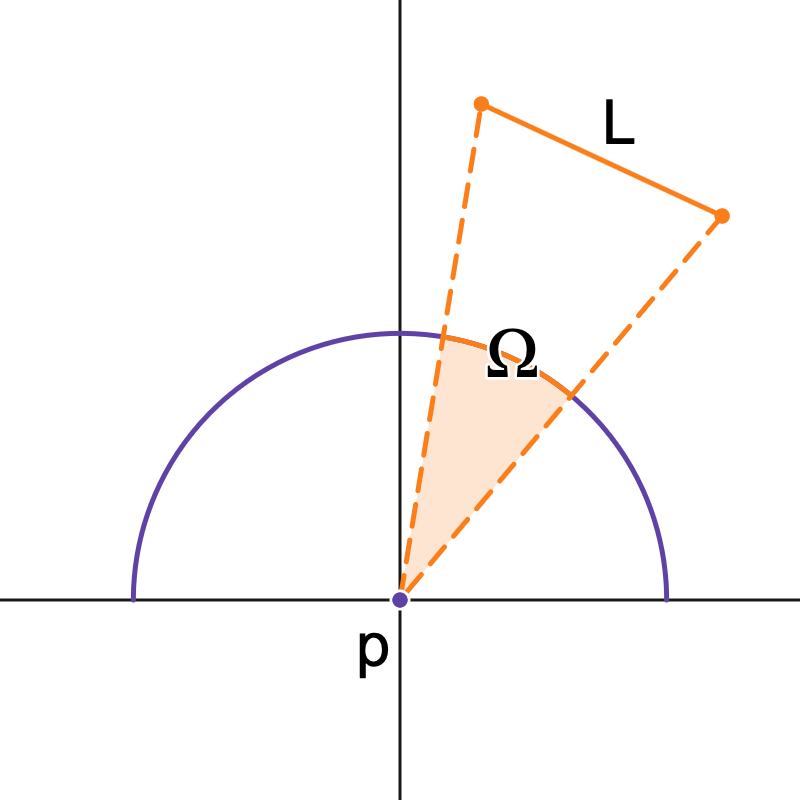
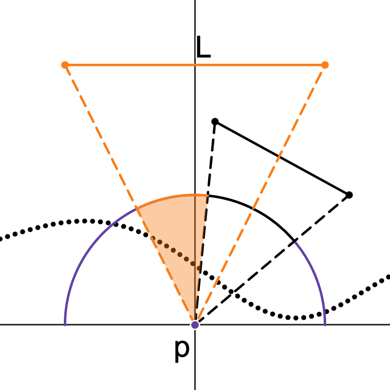
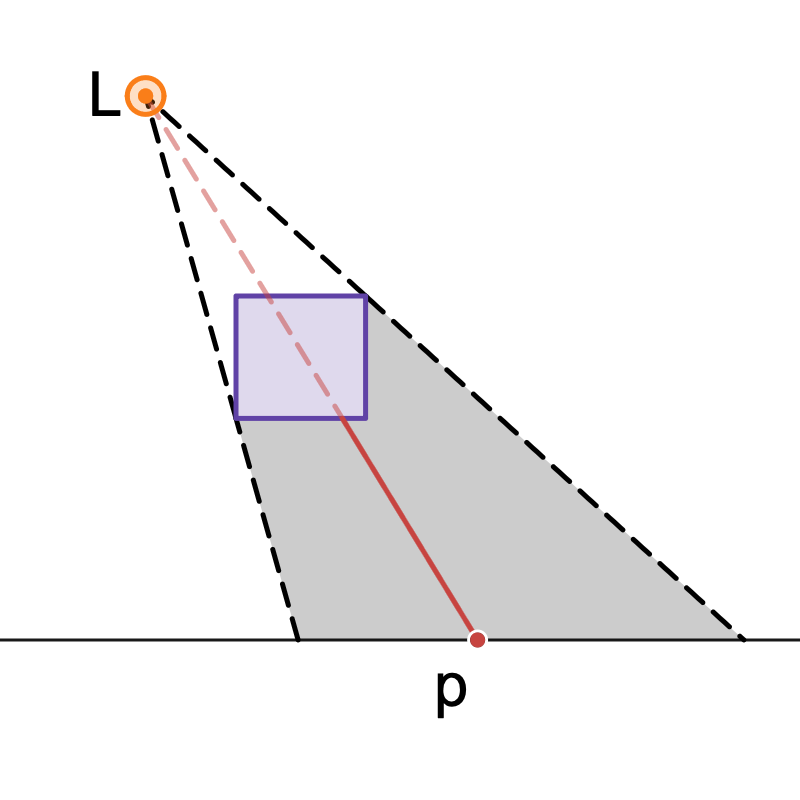

Dayth Month Year
When it comes to rendering, shadows are essential. Not only do they help convey a sense depth and form, but they also help with composition by silhouetting and foregrounding different objects within an image. A lot of clever people have come up with various techniques for efficiently rendering real-time shadows. Soft shadows in particular are an attractive area of research because they more realistically model the physical world and can produce subtler lighting effects. In this post I'll go over a neat technique for rendering physically plausible soft shadows that is compatible with classic shadow map techniques.
To start, it would help to understand how we model shadows mathematically. Consider the local hemisphere around a given surface point \(\mathbf{p}\). For a given light emitting object \(L\), the projection of the light onto the unit hemisphere at \(\mathbf{p}\) produces a solid angle \(\Omega\) which represents how much of the object is visible from \(\mathbf{p}\):

The amount of light or irradiance \(E\) recieved from \(L\) at the point \(\mathbf{p}\) can be given by integrating over all the directions \(\omega\) within the area subtended by the solid angle:
$$ E(\mathbf{p}) = \int_{\Omega} L(\mathbf{p}, \omega) \cos{\omega} \, d\omega $$
The \(\cos{\omega}\) term is just here to respect Lambert's cosine law. To accommodate shadows, we introduce a binary visibility term \(V\), which considers whether the ray between \(\mathbf{p}\) and \(L\) in direction \(\omega\) is blocked by some other object:
$$ E(\mathbf{p}) = \int_{\Omega} L(\mathbf{p}, \omega) V(\mathbf{p}, \omega) \cos{\omega} \, d\omega \tag{1} $$
As the point \(\mathbf{p}\) moves over the surface, more or less of the incoming light from \(L\) will be blocked. This has the effect of producing smooth gradations between lit and unlit portions of the surface.

Usually, given an integral like this we resort to sampling \(\Omega\) at a limited number of random directions, i.e. using Monte Carlo methods. Techniques like temporal accumulation and denoising can be used to smooth out artifacts from undersampling.
FIGURE.
Determining the visibility term \(V\) is another challenge in itself. Practically, this involves ray tracing the scene to check for any intersections between \(\mathbf{p}\) and \(L\). Accelleration structures such as bounding volume hierarchies make this process somewhat tractable, especially with the advent of dedicated ray tracing hardware. The point of this post however is to introduce a method which does not require the use of auxiliary data structures, by extending the classic technique of shadow mapping.
For many years shadow mapping has stood as the default approach for rendering real-time shadows. Shadow mapping works by making the simplification that all the incoming light from \(L\) is being emitted from a single point in space. This effectively reduces the integral in equation (1) to a single sample in the direction of \(L\).

The question we must answer now is: can we see \(L\) from the point of view of \(\mathbf{p}\)? Shadow mapping answers this by solving the inverse: what can we see from the point of view of \(L\)? To do this, it simply renders the current scene from a camera at \(L\), rasterising the geometry into a depth buffer known as a shadow map.
FIGURE.
When it comes to shade a surface point \(\mathbf{p}\), we simply transform the point from world space to light space, then perform a visibility test by comparing the depth of \(\mathbf{p}\) to the depth encoded in the shadow map. If \(\mathbf{p}\)'s depth is greater, then it is in shadow.
FIGURE.
By the very nature of the light source being a single point, soft shadows are impossible. The light is either totally visible from \(\mathbf{p}\) or not at all, producing a hard edged shadow.
Many attempts have been made to adapt basic shadow mapping to account for soft shadows. Percentage-closer filtering1 samples the shadow map multiple times around \(\mathbf{p}\) and averages the result of the visibility test to produce a softer edge. Other techniques such as variance shadow maps2, exponential shadow maps3, moment shadow maps4 and convolution shadow maps5 are all attempts at encoding the shadow map to allow for pre-filtering, enabling very soft shadow edges with only one shadow sample.
FIGURE.
One drawback with all these techniques however is that, in their most basic form, they only act to blur shadow edges and do not actually attempt to solve the visibility problem in general. Percentage-closer soft shadows6 attempts to address this by dynamically blurring the shadow edge depending on the distance to the occluder, but this is still only a rough approximation.
FIGURE.
To get really nice, physically accurate shadows, we actually need to try and solve the visibility problem. The neat thing about shadow mapping is that it effectively produces a discrete approximation of the scene geometry. Every texel in the shadow map projects a square onto the scene.
FIGURE.
This means we can effectively ray trace a path to the light source from \(\mathbf{p}\) by checking for an intersection between the projected square and the ray. To do this, we project the ray onto the light's viewing plane to determine the footprint of the ray in light space.
FIGURE.
By doing this for a number of random samples around \(\Omega\), we can produce accurate soft shadows.
FIGURE.
The main drawback to this however is that we may have to sample the ray many, many times in order to guarantee visibility. However, by making a small change to the shadow map we can greatly accelerate this process...
Another way to determine the visibility between \(\mathbf{p}\) and \(L\) is to check whether the ray intersects any of the projected squares produced by the shadow map via a simpler analytical method. This of course is an unreasonable number of tests even for a very low-resolution shadow map (\(128^2 = 16,384)\) tests!, but we can greatly reduce the number of tests we need by using a hierarchical depth map.
FIGURE.
We can approach the visibility problem another way entirely by choosing to approximate the integral \(E\) through discretisation instead of random sampling. Consider segmenting the solid angle \(\Omega\) into a spherical grid, where each cell has area \(A_n\):
$$ E(\mathbf{p}) = \sum_n L(\mathbf{p}, \omega_n) V(\mathbf{p}, \omega_n) A_n \cos{\omega_n} $$
We can simplify this a bit more by projecting the solid angle onto the base of the unit hemisphere. This has the nice property of cancelling out the \(\cos{\omega}\) term. The projection of \(L\) onto the unit disk is called the projected solid angle \(\Omega^{\bot}\). Now we are no longer sampling directions \(\omega\) on a hemisphere, but points \(\omega^{\bot}\) on a disk.
$$ E(\mathbf{p}) = A \sum_n L(\mathbf{p}, \omega^{\bot}_n) V(\mathbf{p}, \omega^{\bot}_n) $$
Then, we project each texel of the shadow map onto this unit square in order to determine what portion of this solid angle is occluded by intermediate geometry.
FIGURE.
Once again we can make use of the hierarchical shadow map to greatly accelerate this process.